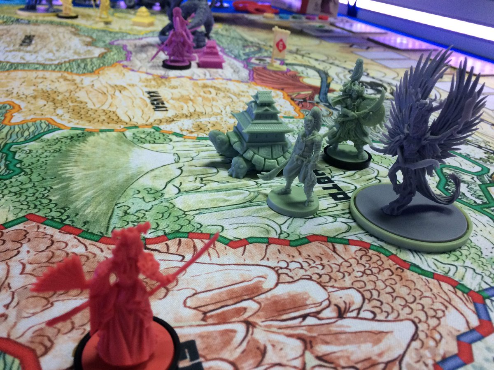

Party&Co

Los grandes Kami olvidados han vuelto del inframundo, descontentos con la actuación del shōgun actual del Imperio. Al inicio de la primavera, con el Gran Año Nuevo, los Kami han reunido sus clanes sagrados con un propósito: reclamar las tierras de Nipón y devolverles sus honorables tradiciones espirituales. Tú, honorable shōgun, lideras uno de estos grandes clanes. ¿Tienes el honor, la virtud y el espíritu, así como el dominio del acero, necesarios para cumplir esta antigua promesa?
Así se nos presenta este Rising Sun, un diseño de Eric M. Lang (Blood Rage, Arcadia Quest, Caos en el Viejo Mundo o El Padrino: El Imperio Corleone). El juego fue publicado en 2017 por Cool Mini or Not (CMON) gracias a una exitosa campaña de micromecenazgo a través de Kickstarter. Posteriormente, el juego ha sido licenciado por varias editoriales. De las ilustraciones se encarga Adrian Smith, quien ya demostrase sus habilidades en Blood Rage, Conan, The Others o HATE.
En nuestro país se encuentra publicado por Edge Entertainment, teniendo en cuenta que las cartas muestran texto (aunque no hay información oculta y si un jugador domina el idioma en el que esté el juego, puede jugarse sin muchos problemas). Permite partidas de 3 a 5 jugadores, con una edad mínima de 14 años y una duración aproximada de entre 90 y 120 minutos. El precio recomendado es de 99,99€. Para esta reseña se ha utilizado una copia de la versión en español de Edge Entertainment, que la propia editorial nos ha cedido amablemente.